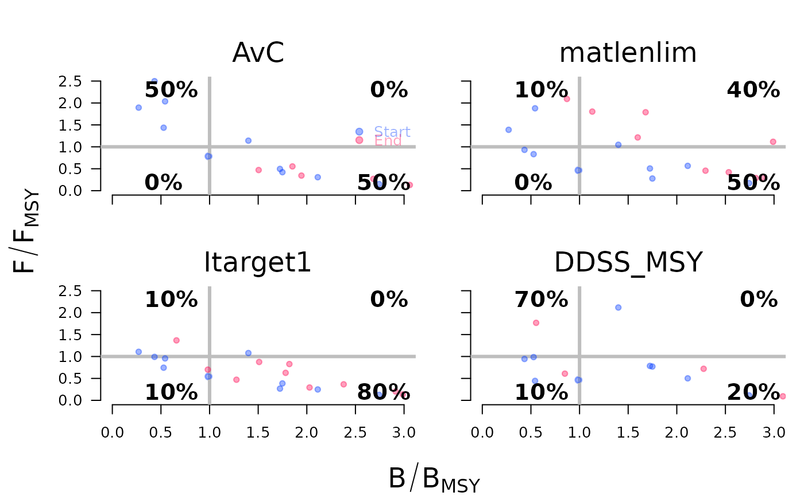

Run an example MSE using three data-limited management procedures from
DLMtool and one stock assessment model from SAMtool.
Details
The MSE is run and three example performance metrics plots are produced: a trade-off plot, a projection plot, and a Kobe plot.
An MSE about is invisibly returned, and can be explored further (e.g., summary(MSE)).
Examples
# \donttest{
MSE <- demo()
#> Running an example MSE with 10 simulations
#>
#> Using four example management procedures:
#>
#> 1. AvC - TAC set at the average catch (see ?DLMtool::AvC)
#>
#> 2. matlenlim - Size limit set at the length of maturity (see
#> ?DLMtool::matlenlim)
#>
#> 3. Itarget1 - TAC set using an Index Target method (see
#> ?DLMtool::Itarget1)
#>
#> 4. DDSS_MSY - TAC set using a state-space delay difference model with a
#> TAC recommendation based on fishing at FMSY (see ?SAMtool::DDSS_MSY)
#>
#> Checking OM for completeness
#>
#> Loading operating model
#>
#> Optimizing for user-specified movement
#>
#> Calculating MSY reference points for each year
#>
#> Optimizing for user-specified depletion in last historical year
#>
#> Calculating historical stock and fishing dynamics
#>
#> Calculating per-recruit reference points
#>
#> Calculating B-low reference points
#>
#> Calculating reference yield - best fixed F strategy
#>
#> Simulating observed data
#>
#> Running forward projections
#>
#> 1 / 4 Running MSE for AvC
#>
#>
|== | 2 % ~01s
|=== | 4 % ~01s
|==== | 6 % ~01s
|===== | 8 % ~01s
|====== | 10% ~01s
|======= | 12% ~01s
|======== | 14% ~01s
|========= | 16% ~01s
|========== | 18% ~01s
|=========== | 20% ~01s
|============ | 22% ~01s
|============= | 24% ~01s
|============== | 27% ~01s
|=============== | 29% ~01s
|================ | 31% ~01s
|================= | 33% ~01s
|================== | 35% ~01s
|=================== | 37% ~01s
|==================== | 39% ~01s
|===================== | 41% ~01s
|====================== | 43% ~01s
|======================= | 45% ~01s
|======================== | 47% ~01s
|========================= | 49% ~01s
|========================== | 51% ~01s
|=========================== | 53% ~01s
|============================ | 55% ~01s
|============================= | 57% ~01s
|============================== | 59% ~01s
|=============================== | 61% ~01s
|================================ | 63% ~01s
|================================= | 65% ~01s
|================================== | 67% ~01s
|=================================== | 69% ~01s
|==================================== | 71% ~01s
|===================================== | 73% ~01s
|====================================== | 76% ~01s
|======================================= | 78% ~00s
|======================================== | 80% ~00s
|========================================= | 82% ~00s
|========================================== | 84% ~00s
|=========================================== | 86% ~00s
|============================================ | 88% ~00s
|============================================= | 90% ~00s
|============================================== | 92% ~00s
|=============================================== | 94% ~00s
|================================================ | 96% ~00s
|================================================= | 98% ~00s
|==================================================| 100% elapsed=02s
#>
#> 2 / 4 Running MSE for matlenlim
#>
#>
|== | 2 % ~04s
|=== | 4 % ~03s
|==== | 6 % ~02s
|===== | 8 % ~02s
|====== | 10% ~03s
|======= | 12% ~03s
|======== | 14% ~02s
|========= | 16% ~02s
|========== | 18% ~03s
|=========== | 20% ~02s
|============ | 22% ~02s
|============= | 24% ~02s
|============== | 27% ~02s
|=============== | 29% ~02s
|================ | 31% ~02s
|================= | 33% ~02s
|================== | 35% ~02s
|=================== | 37% ~02s
|==================== | 39% ~02s
|===================== | 41% ~02s
|====================== | 43% ~02s
|======================= | 45% ~02s
|======================== | 47% ~02s
|========================= | 49% ~01s
|========================== | 51% ~02s
|=========================== | 53% ~01s
|============================ | 55% ~01s
|============================= | 57% ~01s
|============================== | 59% ~01s
|=============================== | 61% ~01s
|================================ | 63% ~01s
|================================= | 65% ~01s
|================================== | 67% ~01s
|=================================== | 69% ~01s
|==================================== | 71% ~01s
|===================================== | 73% ~01s
|====================================== | 76% ~01s
|======================================= | 78% ~01s
|======================================== | 80% ~01s
|========================================= | 82% ~01s
|========================================== | 84% ~01s
|=========================================== | 86% ~00s
|============================================ | 88% ~00s
|============================================= | 90% ~00s
|============================================== | 92% ~00s
|=============================================== | 94% ~00s
|================================================ | 96% ~00s
|================================================= | 98% ~00s
|==================================================| 100% elapsed=03s
#>
#> 3 / 4 Running MSE for Itarget1
#>
#>
|== | 2 % ~01s
|=== | 4 % ~00s
|==== | 6 % ~00s
|===== | 8 % ~00s
|====== | 10% ~01s
|======= | 12% ~01s
|======== | 14% ~01s
|========= | 16% ~01s
|========== | 18% ~01s
|=========== | 20% ~01s
|============ | 22% ~01s
|============= | 24% ~01s
|============== | 27% ~01s
|=============== | 29% ~01s
|================ | 31% ~01s
|================= | 33% ~01s
|================== | 35% ~01s
|=================== | 37% ~01s
|==================== | 39% ~01s
|===================== | 41% ~01s
|====================== | 43% ~01s
|======================= | 45% ~01s
|======================== | 47% ~01s
|========================= | 49% ~01s
|========================== | 51% ~01s
|=========================== | 53% ~01s
|============================ | 55% ~01s
|============================= | 57% ~01s
|============================== | 59% ~01s
|=============================== | 61% ~01s
|================================ | 63% ~01s
|================================= | 65% ~01s
|================================== | 67% ~01s
|=================================== | 69% ~01s
|==================================== | 71% ~00s
|===================================== | 73% ~00s
|====================================== | 76% ~00s
|======================================= | 78% ~00s
|======================================== | 80% ~00s
|========================================= | 82% ~00s
|========================================== | 84% ~00s
|=========================================== | 86% ~00s
|============================================ | 88% ~00s
|============================================= | 90% ~00s
|============================================== | 92% ~00s
|=============================================== | 94% ~00s
|================================================ | 96% ~00s
|================================================= | 98% ~00s
|==================================================| 100% elapsed=02s
#>
#> 4 / 4 Running MSE for DDSS_MSY
#>
#>
|== | 2 % ~01m 01s
|=== | 4 % ~30s
|==== | 6 % ~20s
|===== | 8 % ~15s
|====== | 10% ~24s
|======= | 12% ~20s
|======== | 14% ~17s
|========= | 16% ~14s
|========== | 18% ~20s
|=========== | 20% ~17s
|============ | 22% ~15s
|============= | 24% ~14s
|============== | 27% ~17s
|=============== | 29% ~15s
|================ | 31% ~14s
|================= | 33% ~13s
|================== | 35% ~15s
|=================== | 37% ~14s
|==================== | 39% ~13s
|===================== | 41% ~12s
|====================== | 43% ~14s
|======================= | 45% ~13s
|======================== | 47% ~12s
|========================= | 49% ~11s
|========================== | 51% ~13s
|=========================== | 53% ~12s
|============================ | 55% ~11s
|============================= | 57% ~10s
|============================== | 59% ~11s
|=============================== | 61% ~10s
|================================ | 63% ~09s
|================================= | 65% ~09s
|================================== | 67% ~10s
|=================================== | 69% ~09s
|==================================== | 71% ~08s
|===================================== | 73% ~07s
|====================================== | 76% ~08s
|======================================= | 78% ~07s
|======================================== | 80% ~06s
|========================================= | 82% ~05s
|========================================== | 84% ~06s
|=========================================== | 86% ~05s
|============================================ | 88% ~04s
|============================================= | 90% ~03s
|============================================== | 92% ~03s
|=============================================== | 94% ~02s
|================================================ | 96% ~01s
|================================================= | 98% ~01s
|==================================================| 100% elapsed=41s
#>
#> 2 years had TAC = NA for some simulations ( 2 % of total simulations)
#>
#> Used TAC_y = TAC_y-1
#>
#> MSE Complete
#>
#> Plotting Results using example Performance Metrics:
#>
#> Trade-Off Plot
#>
#> Projection Plot
#>
#> Kobe Plot
#>

# }